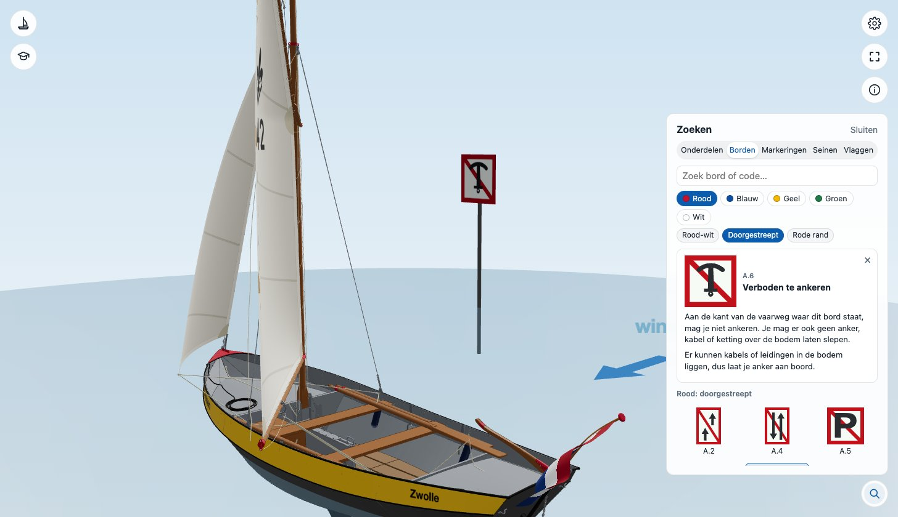
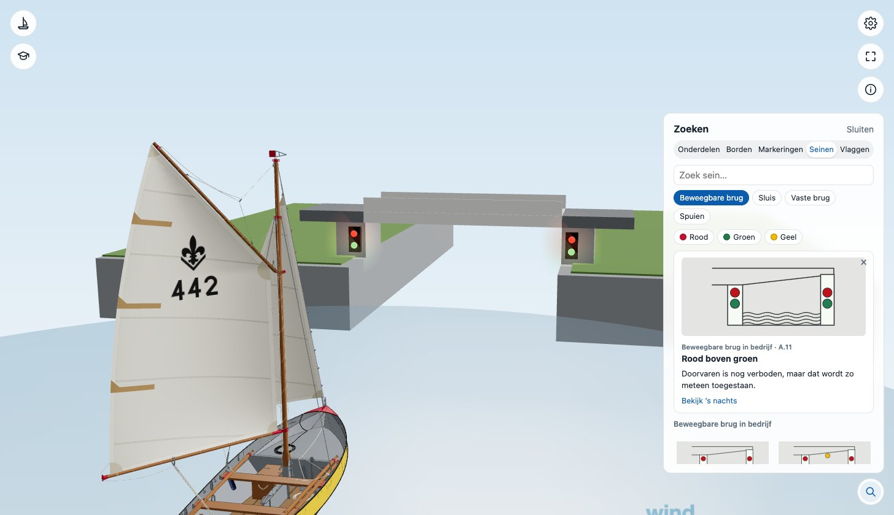
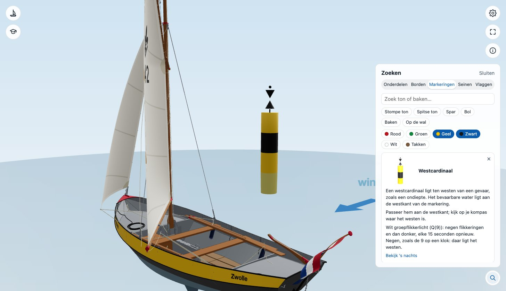
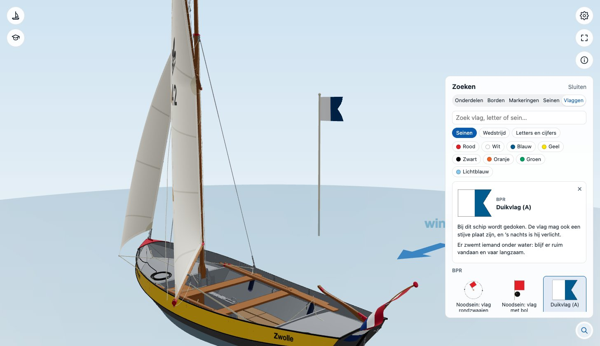
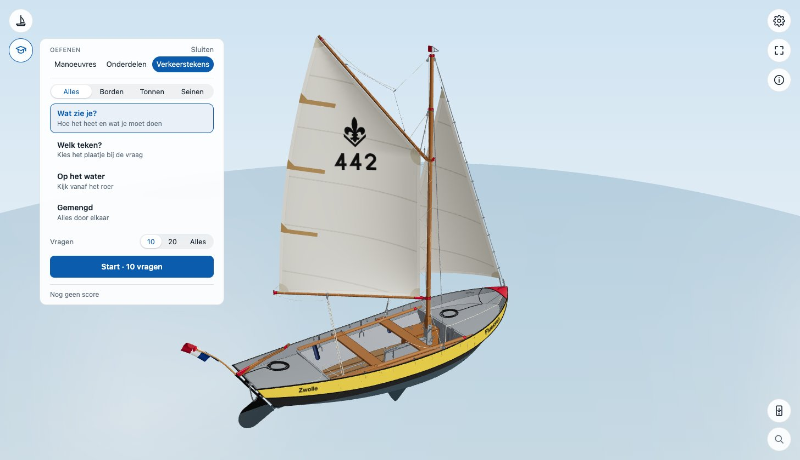
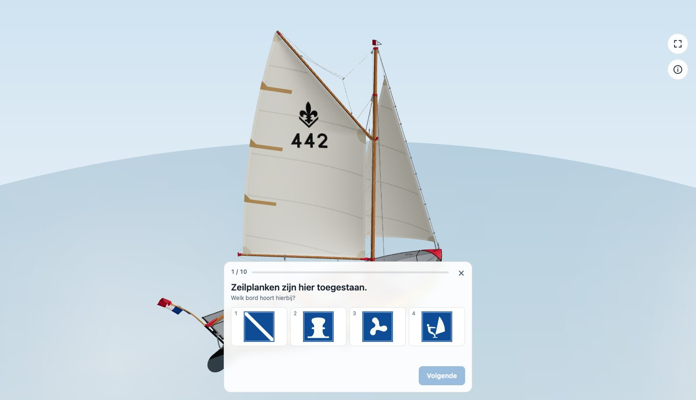
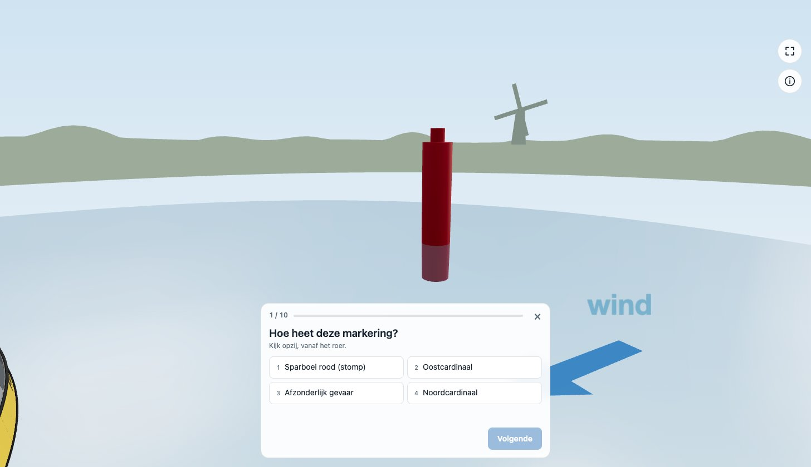

Verkeerstekens
De borden, de betonning, de lichten bij bruggen en sluizen en de vlaggen uit het BPR: opzoeken wat ze betekenen, ze bij de boot op het water zien staan, en ze oefenen.
Opzoeken
Het vergrootglas rechtsonder opent Zoeken. Naast Onderdelen staan daar vier tabbladen. In elk tabblad typ je een naam, code of betekenis, of je zoekt op wat je ziet.
- Borden: eerst de kleur (rood, blauw, geel, groen, wit), dan het soort bord, zoals doorgestreept of rode rand.
- Markeringen: tonnen en bakens op hun vorm (stompe ton, spitse ton, spar, bol, baken, op de wal) en hun kleuren. Kies je meer kleuren, dan zie je wat ze allemaal heeft: zwart en geel geeft de cardinalen.
- Seinen: de lichten bij bruggen, sluizen en spuisluizen, elke stand apart (één rood, rood boven groen, rood en geel...), op plek en op de kleur van de lichten.
- Vlaggen: de vlaggen en borden uit het BPR, de wedstrijdseinen en de letters en cijfers van het seinboek, op soort, kleur en patroon.


Een bord kiezen: het kaartje zegt wat het betekent, en het bord staat naast de boot op het water.
Kies je er een, dan vertelt een kaartje wat het betekent, bij een markering ook hoe je hem passeert. Het staat dan bij de boot op het water: een bord of ton ernaast, een brug, sluis of veerpont recht vooruit, zoals je erop af vaart. Bij een markering of sein met een licht kun je het ook ’s nachts bekijken. Met het kruisje, een ander tabblad of Sluiten gaat het weer weg en gaat de camera terug.


Seinen: de brug recht vooruit, met de lichten van die stand aan.


Markeringen: zwart en geel geeft de vier cardinalen.
Borden die niet bij CWO horen staan er ook in, om op te zoeken. Op hun kaartje staat Niet voor CWO; in de quiz komen ze niet. Dat geldt ook voor de meeste vlaggen.


Oefenen


Open Oefenen en kies Verkeerstekens. Kies eerst waarover: Alles, Borden, Tonnen of Seinen (de lichten, en de vlaggen en borden die CWO vraagt). Dan de oefening:
- Wat zie je?: een plaatje; de ene vraag is hoe het heet, de volgende wat het betekent of wat je moet doen, bij een markering hoe je hem passeert.
- Welk teken?: een naam of betekenis; kies het plaatje dat erbij hoort.
- Op het water: het teken staat bij de boot en je kijkt vanaf het roer, zoals in de weergave Schipper bij de manoeuvres. Sleep om rond te kijken.
- Gemengd: alles door elkaar.




Antwoord met een klik of met 1 tot 4. Na het antwoord lees je wat het teken is en wat het betekent. De foute antwoorden komen uit dezelfde groep, dus een rood bord tussen rode borden. Je score wordt in je browser onthouden; met Oefen je fouten krijg je wat je de laatste keer fout had nog eens.
Wat een teken betekent, komt uit het Binnenvaartpolitiereglement (BPR). Zie je iets dat niet klopt, gebruik dan Melden in het i-menu: je melding neemt mee welk teken je bekeek of welke vraag openstond.